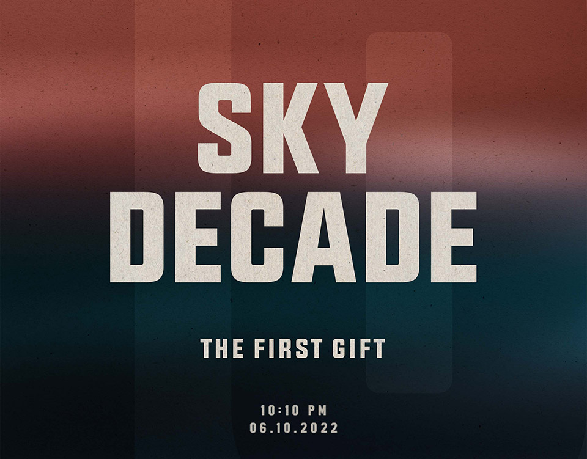

Vừa qua, Sơn Tùng M-TP đăng tải một đoạn nhạc demo dài 59 giây, đây là điều chưa từng có trước đây. Cộng đồng mạng và fan xôn xao, bùng nổ thảo luận và dự đoán cho lần trở lại của nghệ sĩ. Ngoài ra, cụm hashtag #SkyDecade cũng mang đến nhiều tò mò.
Tối 5/10, Sơn Tùng M-TP chính thức đăng tải poster công bố dự án đặc biệt kỷ niệm 10 năm ca hát mang tên Sky Decade. Trên poster ngoài tên của dự án, dòng chữ “The First Gift” đã hé lộ đây chỉ mới là món quà đầu tiên mà nghệ sĩ dành tặng cho những người yêu thương, đã đồng hành cùng anh trong suốt chặng đường 10 năm qua.
Ngày 7/10/2012, trên sân khấu chương trình “Bài hát Yêu thích”, Sơn Tùng M-TP chính thức gia nhập làng giải trí với ca khúc “Cơn mưa ngang qua”. Chàng trai vừa tròn 18 với mái tóc nâu ngắn, gương mặt vẫn còn nét bụ bẫm trẻ con, trình diễn cùng ban nhạc ca khúc tự mình sáng tác bằng năng lượng và sự tự tin mà sẽ khó ai tin rằng đấy là sân khấu đầu tiên của cậu. 10 năm sau, cái tên Sơn Tùng M-TP trở thành một thương hiệu, một cái tên không thể thiếu trong bản đồ âm nhạc hiện đại Việt Nam. Ngày 7/10/2022 đánh dấu cột mốc 10 năm Sơn Tùng M-TP chính thức ra mắt, nhưng cái tên đi cùng anh trong dự án kỷ niệm lần này lại không phải là nghệ danh của mình, chẳng hạn như #SonTung10nam hay #MTPmotthapki, mà lại là #SkyDecade – một thập kỉ cùng SKY - tên gọi cộng đồng người hâm mộ của Sơn Tùng M-TP.